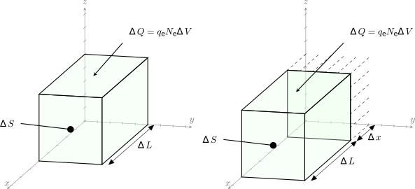

Плотность тока
Электрические заряды, находящиеся в движении, формируют электрический ток. Если формально, электрическим током называется всякое упорядоченное движение электрических зарядов в пространстве. Одной из характеристик электрического тока является сила тока. Силой тока сквозь некоторую поверхность \(S\) называется скалярная величина \(I\), равная первой производной по времени от заряда \(Q\), проходящего через эту поверхность:
Единица измерения силы тока - Ампер. Один Ампер равен количеству заряда (Кулон, Кл), протекающему через заданную поверхность за единицу времени (секунда, с).
В теории поля обычно интерес представляют процессы, протекающие в точке, а не в пределах некоторой большой области пространства. В этом случае удобно использовать другую, векторную характеристику электрического тока - плотность электрического тока. Вектор плотности электрического тока \(\vec{J}\) характеризует распределение электрического тока по сечению \(S\). Единицы измерения - Ампер/метр\(^2\).
Приращение тока \(\Delta I\), пересекающего поверхность через бесконечно малый элемент поверхности \(\Delta S\), нормальный к плотности тока, равно:
Если вектор плотности тока ориентирован под углом к элементу поверхности, то силу тока можно найти скалярно перемножив векторы \(\vec{J}\) и \(\vec{S}\):
Напомним, что скалярное произведение равно произведению модулей двух векторов и косинусу угла между этими векторами. Таким образом, если между векторами \(\vec{J}\) и \(\vec{S}\) угол \(90^\circ\), то ток через такую поверхность равен нулю.
Вектор \(\vec{S}\) направлен в ту же сторону, что и нормаль к той плоскости, которая является касательной к поверхности в рассматриваемой точке. Конечно, существуют две такие нормали. Мы будем рассматривать внешнюю нормаль, если не указано иное.
Полный ток будет равен интегралу вектора \(\vec{J}\) по поверхности \(S\):
Плотность тока связана со скоростью зарядов в некоторой точке. Рассмотрим элемент заряда \(\Delta Q\), который занимает объем ограниченный кубом объемом \(\Delta S \Delta L\)

An increment of charge, \(\Delta Q= \rho_v \Delta S \Delta L\), which moves a distance \(\Delta x\) in a time \(\Delta t\), produces a component of current density in the limit of \(J_x=\rho_v \upsilon_x\)
Electric current density refers to the amount of electric current flowing through a given area. It is a measure of the concentration of electric charge flowing through a material. Mathematically, electric current density is defined as the electric current per unit area of a cross-section of the material. Its SI unit is amperes per square meter (A/m²).
When an electric field is applied to a material, the electrons within the material are set into motion, and they start to flow in a certain direction. The flow of these electrons constitutes an electric current. The current density describes how concentrated this flow is within the material.
Electric current density is a critical parameter in electrical engineering and physics, as it plays a fundamental role in various electrical devices and applications. For instance, it is used in designing electrical conductors, transformers, motors, and other electrical components.